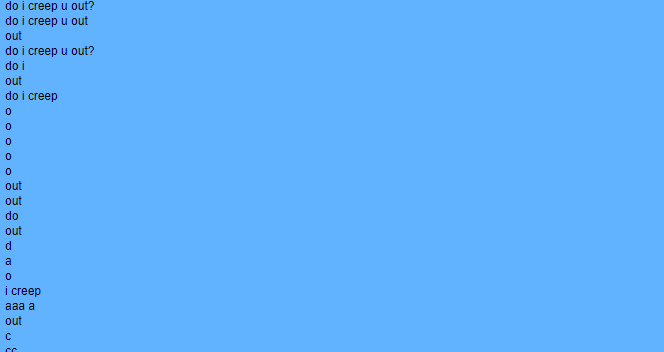

music of the week - black dresses' peaceful as hell.

length: 46:41
genre: electronic, alternative, grunge, industrial
- 1. left arm of life
- 2. damage supressor
- 3. angel hair
- 4. beautiful friendship
- 5. im a freak cuz im always freaked out
- 6. bliss and stupidity
- 7. mirrorgirl
- 8. maybe this world is another planets hell?
- 9. scared 2 death
- 10. express yourself
- 11. sharp halo
- 12. impossible dream
- 13. please be nice
- 14. creep u
- 15. 666
Black dresses released a record a couple of weeks ago called peaceful as hell that I've been listening to a lot. here are some of my favorite tracks from the album:
favorite track - angel hair
second favorite track - creep u
here's the music video for creep u, by the way.
you can get this album here on their bandcamp for 10 usd or more!
Peaceful as hell is black dresses' first album release since love and affection for stupid little bitches came out eight months ago. it's just as strong as that album, as well! I really enjoyed the wait leading up to the release of this album, mainly because of the way that black dresses interacted with their fans.
it began with a music video for the fourteenth track on the album, creep u, which was a great appetizer. this was followed a week later by the actual album release, which was accompanied by a livestream where the band played the album for us.
the album itself is a delicious rollercoaster of musical themes. here are a couple of songs from the album that I really liked:
track fourteen - creep u.
the first time I heard this song was in this music video that was released prior to the release of the full album. it looks like a dream you might have if you fell asleep playing yume nikki with hgtv on in the background (stupid analogy, I know).
if you look on the bandcamp, you can see the full lyrics to the song. I like that they even transcribed the choppy, glitchy part near the end of the song.
compared to some of the more high-energy tracks, it's one of the calmer ones. the simple, repetitive chorus got stuck in my head for days. check out the music video, you won't regret it!
track three - angel hair.
angel hair's is driven by a very choppy rhythm that gives the song an incredibly unique feeling. the tight, chopped vocals sung by rook throughout the song accompanied by devi's completely contrasting style of singing give much more weight to the lyrics. it all seems really well thought out.
track four - beautiful friendship.
this is a loud, manic song whose lyrics match the title pretty well. the lyrics are simple and straight to the point, but rook's delivery of the verse is what caught me off guard.
of course, this song has a simple, catchy chorus like many of the other tracks on the album. the song kind of goes all over the place, but that's definitely one of the reasons I like it and many of the other songs on the album.
track two - damage supressor.
lyrically, this song is pretty similar to much of black dresses material. the distorted beat...devi's unique "lazy" singing style...off-kilter synth lines...down-but-not-out lyrical theme...yep, it's a black dresses song. it's one of the most interesting songs on the album because of the motif established within the first ten seconds that pretty much continues throughout the entire track in different forms. it's a really strong "backbone" for the tune (does that make any sense at all?) it's really catchy.
Alright, it's four am currently, so I think I'll leave it there. peaceful as hell is a great album, so go check it out and buy it if you like it!
I missed last week's album of the week because I'm losing track of time while I desperately calmly and diligently search for a new job. hopefully I'll be back soon with another blog post of some kind! thanks for reading.